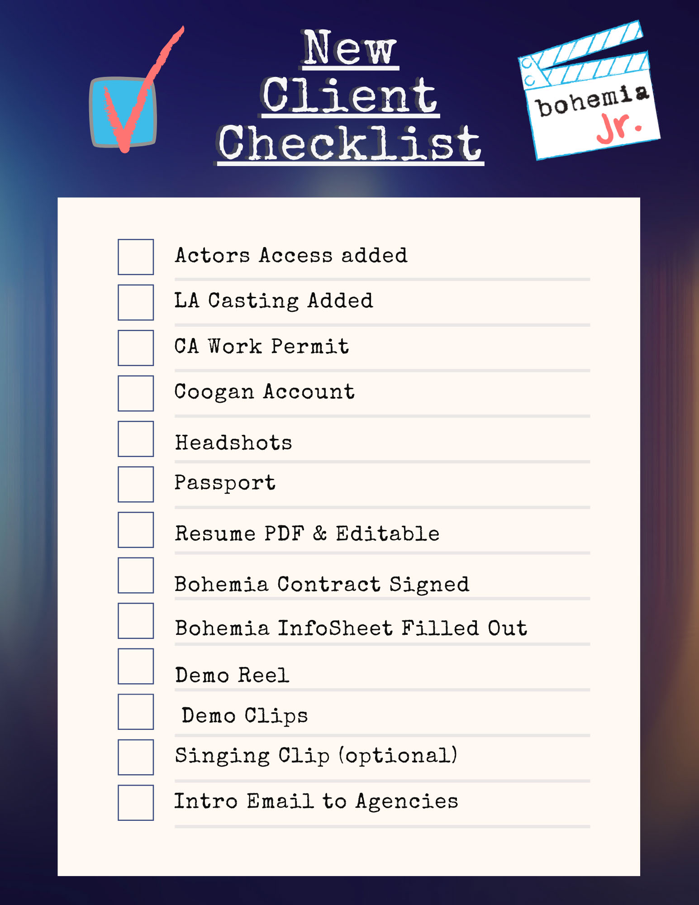

Welcome to Bohemia Jr.! It is our pleasure to have you join the Bohemia family and we are certain there is success in your future. Please use this guide to answer many questions you may have and go over expectations we have for our clients and parents.
Bohemia Jr. is the youth division of Bohemia Group.


Google Drive
Every client should have already received an invitation to a Google Drive folder via email. This folder will be the main source of storage for files and things to be reviewed.
Drive FolderHeadshots
Store every headshot session — full proofs. I will make sub folders to organize each shoot into types, selects, and "to upload."
Important Docs
Upload work permits, Coogan paperwork, passports, vaccine records, union memberships, contracts, etc.
Reels / Clips
- Booked Work Footage — airchecks from aired, streaming or televised programming, edited clips for reel, digital prints of films/appearances.
- Demo Scenes — client-created custom scenes for reel, shot/edited like booked work.
- Self Tapes for Profiles — custom scenes, project-released/non-NDA auditions that are coached and great examples of skill, genre, character.
- VO Reel — voice over mp3 audio files of edited reel, clips, demo examples, booked work, character, commercial, narration, video game, animation, etc.
- About Me — a 60-second charismatic getting-to-know-you video.
- Slate Shots — seven-second video for Actors Access to catch attention. See Slate Shot Ideas.
- Vocal / Singing Clips — 16/32 bars of accompanied or backing-track vocals of musical theater/pop songs that showcase range and style, filmed like a self tape.
- Dance Clips — 30–60 seconds of dance style or modern pop dance skill to music.
- Special Skill Clips — (for Casting Networks) 30-second clips of athletic or trained disciplines.
- Character Type Clips — 30-second demo or self tape clips of types (underdog, bully, airhead, etc).
- Reels — edited compilations of booked work or a combo of clips, self tapes, demo scenes, booked work, etc. No longer than 2.5 minutes, or genre-based 60-second reels.
Self Tapes
Self tapes for review, if not using WeTransfer, or self tapes you want to save.
Resumes
PDFs or docs of your current resume. Use resumes.childactor101.com for the industry standard template.
Audition Tracker (optional)
Submission sheets from talent reps, spreadsheets of auditions and outcomes. Use pages.childactor101.com.
Please keep this folder organized with appropriately labeled sub folders that explain the contents. For example, a sub folder may be labeled HEADSHOTS and may include another sub folder labeled "June 2027."
Self Tape Auditions
An important part of my duties as your manager is to review your self tape auditions before they are sent to the agency or uploaded to Actors Access. If possible, I try to watch them before the deadline to give notes or changes if necessary.
You can share your self tape auditions with me by sending the files via WeTransfer, or by creating a Google Drive sub folder.
I do not get access to view self tapes that are uploaded by the client to Actors Access. The agent can watch, approve, and submit — but I would have no access to that. Please make it a priority to send self tapes to me for review before the deadline. I know that's not always going to be reality, but we can make an effort.
 Free Access
Free Access
Work Permits / Coogan Accounts
- Obtain or supply us with Coogan Account information ASAP. See Coogan Law & Account Info.
- Make sure current work permits are on file at all times. You should have, at minimum, California & your home state. See California Entertainment Work Permit.
- Set a calendar reminder one month before expiration of the permit!!!
Casting Profiles
Every client must have an active profile on Actors Access and Casting Networks. If you have not done so, please add us as representatives on those profiles.
For LA Casting you will add under management: Bohemia Group. Our agency code is 78a37a4.
For Actors Access you will add under management: Bohemia Group — Susan Ferris, Los Angeles, CA. Actors Access is connected to Breakdown Services and that is our primary source of casting notices for FILM, TV, STAGE and some COMMERCIAL casting notices. You have two free headshots that you may upload. It is vital that you upload an approved THEATRICAL and COMMERCIAL headshot there. We will want you to add additional headshots after you have taken them or we have discussed options. It is likely that you will be asked to upload a minimum of 3 and up to 5 additional photos to help us submit the best looks to casting for specific roles.
- Fill out required info on your casting profile.
- Make sure to always update your skills, sizes and resume.
- Check in at least four times a year to see if info is accurate.
- You may update your resume as soon as you shoot a project, but not before.
- Please feel free to submit yourself, or ask me to submit you, for any commercial, non-union, print or student film projects. There will come a time when I may decide that we are not needing these types of jobs anymore, or I may ask you to pause or stop self submissions for various reasons.
Slate Shots

You must attach a slate shot to a few photos. Slate shots are 7-second video clips that match your headshot. It is optional to match wardrobe. It is a casual introduction by the talent and it is NOT the typical slate given before an audition. It should be genuine and show personality that reflects the tone of the individual photo.
Example: "Hi there! I'm Corey Ralston and I look forward to meeting you soon."
You are given one free slate shot and additional slate shots are $5 a piece. Once you record these please upload to Google Drive for approval before posting them.
Slate Shot IdeasVideo Clips
It is essential to upload performance clips on Actors Access. Casting offices most likely do not know who you are yet and need to see an example of what you can do. Having performance clips we can submit with your photo will increase your odds of getting an audition in a huge way. Please upload at least one clip ASAP.
Clip Examples
- Reel of previous work
- Self taped scene or monologue
- Singing clip
- Specialty skill (athletic, hobby)
- About me video
- Demo clips
Demo Clips
Self created content is king right now. It is very simple to film a demo scene to use as a clip. This should look as professional as you are capable of. It should be filmed with a scene partner and should be shot at a location that makes sense with good lighting and sound. It should be edited when appropriate with multiple camera angles. A good place to start is having a wide master shot of the entire clip and one angle on or over the shoulder of the scene partner showing a closeup of the speaking performer. These shots can be edited using simple software or apps on your smartphone.
- Clips should be no longer than 60 seconds in length.
- They should be original or un-produced material.
Do not use scripts from TV or film, especially if it's well known or iconic. You want the clip to be focused on you. Do not give an opportunity for a viewer to elicit a comparison of a previous actor's performance.
Take this course for free to get two scenes ready for your profiles. Email me if interested.
Ultimately we would love to have at least one performance clip that matches every headshot uploaded of types you can play. This is a proven valuable tool to assist casting and get far more auditions!
For LA Casting you will want to upload a reel or performance clips as well. Please include an upbeat or commercial example. You may film a mock or spec commercial on a product — have fun with it and make sure it showcases your talent in the best light.
Connect with me to brainstorm ideas and receive guidance on what works. It is fun and challenging and keeps your skills sharp. Once you have footage from projects you were hired to act in, we can discuss creating a reel and posting those clips as well.
Free AccessResumes
- Print at least 10 copies of your resume in case casting requests a hard copy.
- Have a PDF resume on file.
See the resume template for the industry standard format. Do not creatively stray too far from this resume style.
Use resumes.childactor101.com for a fillable industry standard template and PDF download.

Training
- Every actor should be in constant pursuit to improve their skills.
- Do not get complacent, ever.
- You should be training always, and with reputable instructors.
- Casting will look at current training the same as credits when you are developmental.
- With the exception of actors under 8 (determined case by case), every client should be in at least one weekly class — preferably an audition technique class with on-camera scene study.
- Additionally I would encourage commercial workshops and casting workshops.
- I also highly recommend improv classes.
Coaching
You should be in continuous coaching as well. I am available occasionally for coaching sessions (free of charge) when you have an important audition. It is my passion and pleasure. But my goal is for everyone to find a trusted coach that you can work with consistently or when needed. I can recommend names. I require all TV and film roles larger than a co-star to be coached prior to the audition. This is not negotiable — you must prepare and be competitive.
Discuss any classes or coaches with me prior to signing up. I have a wealth of knowledge and recommendations to offer and can determine what the best fit for your individual needs are. I can also recommend classes and coaches that fit your budget.
Headshots
Headshots are the most important marketing tool you have and should be given a lot of care and attention. Kids under 15 should get updated photos twice a year at least. Every actor should update looks once a year, or when you significantly change your appearance, or when you need to reevaluate your tools if facing a slump in activity.
I am extremely opinionated about headshots. I am a former photographer with years of experience in this field and I know what photos work. I am an advocate of spending as much as you can afford on this essential tool. Headshots are the key to getting you opportunities. Be competitive and have amazing photos.
Here is a recommendation list of photographers at various price points that will deliver the type of photo that fits your needs and style.
Corey's Photographer Picks Headshot Guide
Communication
Communication is key to a successful relationship. This is a fast paced business and often times I am under the gun to get a response to casting or production. Please try your best to return messages promptly. Neither of us want to miss out on an opportunity. I am reachable by phone, text and email. My "business hours" are 10am to 8pm. I will do my best to reach you after those hours and on weekends, but understand I am a family man as well.
Best Ways to Reach Corey

- I encourage you to knock on all my doors — never feel like you are bugging me!
- Call me if facing an urgent matter: 559-572-3897 or 323-593-6442.
- Leave a VM, followed by a text (559#) if I do not answer.
- FB Messenger works as an additional backup.
- Try a Bohemia assistant as well.
Please send any pertinent information via email and keep text to chat and simple requests or updates. Email is essential to me when needing to look up info — I use my Gmail as a search box for my life.
I am the first to admit that I am not very speedy and can be forgetful in returning communication. It's a constant goal to become more efficient at this. Please keep nudging me if you haven't heard back. We will get a rhythm!
Out of State Clients
- Every effort will be made to get you self tape auditions instead of in the room, if they offer an option.
- You will only be submitted for guest star and larger roles on episodic TV productions.
- All significant SAG film roles.
- I will not submit you on commercials, co-star or non-union projects unless you are in the area.
Commissions
We all love getting paid. And even if it's $10 it still feels nice. Sometimes managers can work for a client for one to two years without receiving a dime.
Remit 10% of the total gross to Bohemia as soon as you get paid. Please reach out to Corey or the assistant directly for current payment details (Zelle, Venmo, PayPal, ACH or check) — see Contact below.
Networking
One vital and often overlooked job of actors is networking. It is so important! Please take time at least once a quarter to send an email, postcard, direct message, etc. to your database of industry contacts. This includes casting directors you have met or want to meet, agents, producers, etc. I can give plenty of advice and ideas. Each message should have a purpose and always include a photo, casting profile link, video link, and my email address.
Meet With Corey
I like to have official in-person or video chat meetings at least once a year to set goals and discuss any and all issues we are facing. It's very important to have these to keep our team aligned. November or May are ideal meeting times.
CPP (formerly CHSPE)
If and when you are 16 and a sophomore in high school, it is very important to take the California High School Proficiency Exam in order to become legal 18 and stay competitive in this market.
California CPPIt is a huge advantage to your career. It does not mean emancipation, nor does it end your high school education. Register and study early — the exam is offered 3x a year only.
Agents
If you already have agency representation, all communication with them will be handled via email. As your manager, I am the central hub of your team — everything goes through me first, including auditions, self-tapes, schedules, and material approvals. Agents expect and prefer this, especially when working with child actors and their parents. If you receive direct communication that leaves me out, make sure to loop me in via email. This applies to regional agencies as well.
Managers are deeply invested in every aspect of your entertainment career. If you don't yet have an agent, our first priority — if desired — will be securing a commercial agent. Once you're ready for representation at established agencies, I will pitch you at the right time to set up meetings. There is no need to stress about agents — you will get one when the time is right.
On the theatrical side, you are fully covered by Bohemia. Theatrical agents — especially those in adult departments — are looking for credited, specialized actors. My focus is on developing you to a point where you are a strong candidate for agency representation. Trust the process and be patient.
Facebook Group

 I founded and moderate a resource group called Child Actor 101. Please join and take advantage of the community and wealth of information.
I founded and moderate a resource group called Child Actor 101. Please join and take advantage of the community and wealth of information.
 I created a group for my roster as well. It is called The Goonies. I urge you to join — it is the easiest way to communicate with my roster all at once.
I created a group for my roster as well. It is called The Goonies. I urge you to join — it is the easiest way to communicate with my roster all at once.
Services Memo
While I have expertise in coaching, writing, photography, retouching, graphic arts, video editing, and more, I am not obligated or responsible for providing these services to my clients. I often offer extra help out of convenience and a genuine desire to support you, but please make an effort to seek vendors rather than relying on me for everything. I enjoy going the extra mile, but my schedule doesn't always allow it.
Vendor Directory
Utilize the resource directory.childactor101.com to find vendors, coaches, classes, services and more.
Coaching & Education
To fulfill my passion for teaching and performance — while also supplementing my income — I offer coaching and online classes. I occasionally host special educational events for parents as well. Clients never have to pay for coaching or group classes; charging for these services would be unethical. However, since my availability is limited and structured, coaching is only offered on a case-by-case basis. When necessary, I prioritize making time for my clients, and I regularly offer free spots in my classes when possible.
The Blog
There is a wealth of articles that I post on the Child Actor 101 website — a good resource on a great many pertinent topics for navigating the industry.
BlogPet Peeves & What I Love
My Pet Peeves
- Not being informed about auditions, callbacks or bookings (whether paid or not).
- Late or no-show to castings. It makes me look bad!
- Having to ask more than twice for new or updated materials.
- Not being informed of bookout dates.
- Constant second guessing by parents of advice or information given.
I Do Love
- Video/voice updates after auditions and jobs.
- Getting to know everyone better in any way possible — it helps a lot in representing my clients.
- Tags on social media.
- Photos, photos, photos, always!
- Invites to plays, showcases and screenings.
- Actor referrals to talent you meet and trust.
- Calls & visits that are not about Hollywood!
Corey Ralston
323-593-6442 — Office // 559-572-3897 — Cell
Email: corey@bohemiaent.com
Assistant: assistant@bohemiaent.com
Social Media
If you have an IMDb credit, I strongly recommend subscribing to IMDbPro. It allows you to upload photos, a bio, video clips, and more, making it a valuable tool in the industry and adding credibility to your profile. However, ignore the IMDb Star Meter ranking — it has zero impact on your casting potential or industry worth. It's just an algorithm driven by factors beyond your control, and no one in casting takes it seriously.
I highly recommend securing a website with your name as the domain, if possible. At the very least, purchase the domain name immediately. Once you gain any level of success, others may buy it first and demand a hefty price to sell it back to you. Owning your domain gives you control over your online presence and how you appear in Google searches. If you're unsure what your website should include, let's discuss the best approach for you.
Actor Website ExampleI can create your website for you. I use Namecheap domains and Carrd.co to host and build the site. It will cost you about $25 to maintain each year.
Whether or not to create or maintain social media profiles on Instagram, TikTok, Facebook, or X is entirely a personal choice for parents. In my opinion, having a massive following is not necessary. Despite what some may claim, I have never seen an actor lose out on a role because of their social media presence — or lack thereof. While influencer-driven jobs exist, major TV and film roles that truly matter for an actor's career are not awarded based on follower counts.
Blog Post on Social MediaA child's social media accounts should be managed and monitored by parents or a trusted public relations firm. Keep personal and professional accounts separate — your acting profile should focus solely on your career. Social media can be a powerful networking tool, offering opportunities to connect with fans, fellow actors, and industry professionals. Use it strategically and professionally!
Please don't get caught up in the social media frenzy surrounding young actors. I couldn't care less how many followers you have — it has nothing to do with your talent or credibility. It's easy to fall into the trap of prioritizing Instagram clout, but be mindful and stay humble. Hype is just that — hype. "Instafame" is not the goal, nor should it be your focus.
I represent actors who are in this for the craft — performers who dream of winning Oscars and building lasting careers, not chasing fleeting internet validation. I want a roster of professionals who are dedicated to the work, not the illusion of success.
Be strategic, be genuine, and always present yourself with humility. Desperation is a career killer — trust me on that. Yes, red carpet events can be exciting and offer networking opportunities, but they are not your priority. Your job is to audition, improve, and grow as an actor. If that ever becomes secondary to social media status, it's time for a serious reality check.